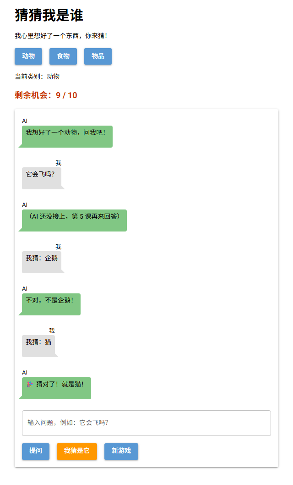
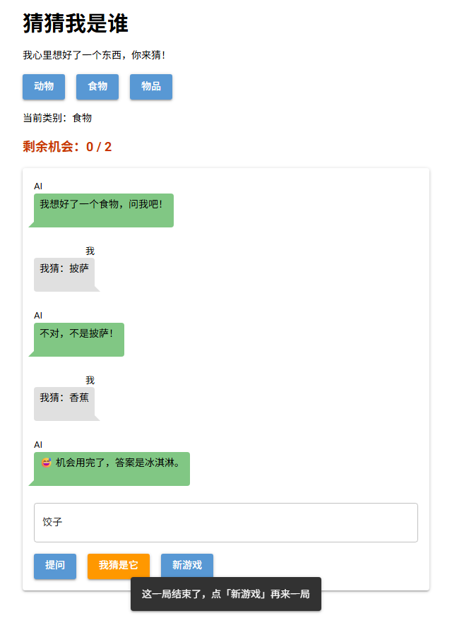

第 4 课任务
现在的游戏只有界面，电脑心里并没有真正选好一个东西。这一课让它变成一个能玩的猜谜游戏：每个类别准备 5 个谜底，开局随机选一个；每猜错一次扣一次机会；猜对或机会用完，这一局就结束。
要记住的东西变多了：当前类别、谜底、剩余机会、这一局是否结束。用来记这些的工具，叫字典。

本课完成后：猜错一次，第二次猜对（真实运行截图）
| 步骤 | 做什么 | 新学的代码 |
|---|---|---|
| 第 1 步 | 认识字典 | {"键": 值}、d["键"] |
| 第 2 步 | 准备谜底，随机选一个 | 字典里放列表、random.choice |
| 第 3 步 | 用字典记录游戏状态 | 在函数里修改字典 |
| 第 4 步 | 判断猜对猜错 | 组合 if / elif / else |
| 第 5 步 | 排错 | KeyError 等 |
第 1 步 · 认识字典
列表按位置找数据（foods[0]）；字典（dictionary，dict）按名字找数据。字典由一对对"键: 值"组成，键（key）是名字，值（value）是数据。
| 代码 | 作用 |
|---|---|
player = {"name": "小明", "level": 3} | 创建字典，花括号 {}，每对用逗号隔开 |
player["name"] | 读取键 "name" 的值："小明" |
player["level"] = 4 | 修改已有的键 |
player["city"] = "北京" | 键不存在时，就是新增一对 |
len(player) | 有几对键值 |
字典是普通的 Python，先在终端里试（新建 dict_test.py）：
player = {"name": "小明", "level": 3, "score": 90}
print(player["name"])
print(player["level"])
player["score"] = 95
player["city"] = "北京"
print(player)
print(len(player))小明
3
{'name': '小明', 'level': 3, 'score': 95, 'city': '北京'}
4终端输出（真实运行结果）
难点：读取不存在的键会报错
键必须一模一样（包括大小写）。例子：player 里没有 "age"，运行 print(player["age"])：
KeyError: 'age'Q1运行后，终端最后一行打印什么？
game = {"category": "动物", "left": 10}
game["left"] = game["left"] - 1
game["left"] = game["left"] - 1
game["category"] = "食物"
print(game)第 2 步 · 准备谜底
字典的值可以是任何东西，包括列表。用类别做键，用谜底列表做值：
SECRETS = {
"动物": ["企鹅", "大象", "猫", "鲨鱼", "蜜蜂"],
"食物": ["披萨", "香蕉", "冰淇淋", "饺子", "鸡蛋"],
"物品": ["雨伞", "手机", "自行车", "吉他", "时钟"],
}| 代码 | 结果 |
|---|---|
SECRETS["食物"] | ['披萨', '香蕉', '冰淇淋', '饺子', '鸡蛋'] |
SECRETS["食物"][0] | '披萨'：先按键找到列表，再按位置取 |
len(SECRETS["动物"]) | 5 |
for c in SECRETS: | 循环字典，依次得到每个键：动物、食物、物品 |
随机选一个，用 Python 自带的 random 模块：
| 代码 | 作用 | 英文意思 |
|---|---|---|
import random | 导入 random 模块，写在文件开头 | random = 随机 |
random.choice(列表) | 从列表里随机选一个元素 | choice = 选择 |
SECRETS、MAX_TRIES 这种全大写的变量名，是 Python 的习惯写法，表示"程序运行中不会改的常量"。Q2想让类别按钮不再手写 ["动物", "食物", "物品"]，而是直接从 SECRETS 生成。哪种写法对？
第 3 步 · 游戏状态
游戏需要随时修改剩余机会。先看用普通变量会出什么问题：
left = 10
def lose_one():
left = left - 1
lose_one()UnboundLocalError: cannot access local variable 'left' where it is not associated with a value难点：函数里不能直接改外面的普通变量
在函数里写 left = ...，Python 会把 left 当成函数自己的局部变量，和外面的 left 无关，于是在赋值之前读取它就报错。而 game["left"] = ... 是修改字典里的内容，不是给变量重新赋值，所以在函数里可以正常使用。例子：
game = {"left": 10}
def lose_one():
game["left"] = game["left"] - 1
lose_one()
lose_one()
print(game["left"]) # 8所以把游戏要记住的东西都放进一个字典 game：
MAX_TRIES = 10
game = {"category": "动物", "secret": "", "left": MAX_TRIES, "over": False}
def new_game():
game["secret"] = random.choice(SECRETS[game["category"]])
game["left"] = MAX_TRIES
game["over"] = False
questions.clear()
chat.clear()
show_left()
say(False, f"我想好了一个{game['category']}，问我吧！")f"...{game['category']}..."，因为外面已经用了双引号。Q3点"食物"按钮会执行下面的函数。执行完后，game["secret"] 可能是什么？
def choose(e):
game["category"] = e.sender.text
category.text = f"当前类别：{game['category']}"
new_game()第 4 步 · 判断猜对猜错
guessdef guess():
g = box.value
if game["over"]:
ui.notify("这一局结束了，点「新游戏」再来一局")
elif g == "":
ui.notify("请先输入你猜的东西")
else:
say(True, f"我猜：{g}")
box.value = ""
if g == game["secret"]:
game["over"] = True
say(False, f"🎉 猜对了！就是{game['secret']}！")
else:
game["left"] = game["left"] - 1
if game["left"] == 0:
game["over"] = True
say(False, f"😅 机会用完了，答案是{game['secret']}。")
else:
say(False, f"不对，不是{g}！")
show_left()剩余机会显示在一个文本组件里，每次变化都调用 show_left() 更新：
def show_left():
left_label.text = f"剩余机会：{game['left']} / {MAX_TRIES}"
left_label = ui.label("").classes("text-lg font-bold text-orange-700")
把 MAX_TRIES 临时改成 2 测试：两次都猜错，机会用完，再点"我猜是它"弹出提示
MAX_TRIES 临时改小，就不用每次猜 10 遍。这是程序员常用的测试方法，测完记得改回 10。Q4谜底是"猫"，剩余机会 10。依次猜：企鹅、猫、大象。最后剩余机会是几？聊天区最后一句 AI 说的是什么？
Q5动手改：给 ask 也加上"这一局结束了"的判断，结束后不能再提问。然后在 SECRETS 里加一个新类别"运动"，放 5 个谜底，看看按钮是不是自动多了一个。
参考答案
def ask():
q = box.value
if game["over"]:
ui.notify("这一局结束了，点「新游戏」再来一局")
elif q == "":
ui.notify("请先输入问题")
else:
questions.append(q)
say(True, q)
say(False, "（AI 还没接上，第 5 课再来回答）")
box.value = ""
SECRETS = {
"动物": ["企鹅", "大象", "猫", "鲨鱼", "蜜蜂"],
"食物": ["披萨", "香蕉", "冰淇淋", "饺子", "鸡蛋"],
"物品": ["雨伞", "手机", "自行车", "吉他", "时钟"],
"运动": ["足球", "游泳", "跳绳", "乒乓球", "滑雪"],
}import random
from nicegui import ui
MAX_TRIES = 10
SECRETS = {
"动物": ["企鹅", "大象", "猫", "鲨鱼", "蜜蜂"],
"食物": ["披萨", "香蕉", "冰淇淋", "饺子", "鸡蛋"],
"物品": ["雨伞", "手机", "自行车", "吉他", "时钟"],
}
game = {"category": "动物", "secret": "", "left": MAX_TRIES, "over": False}
questions = []
def say(mine, text):
with chat:
if mine:
ui.chat_message(text, name="我", sent=True)
else:
ui.chat_message(text, name="AI")
def show_left():
left_label.text = f"剩余机会：{game['left']} / {MAX_TRIES}"
def new_game():
game["secret"] = random.choice(SECRETS[game["category"]])
game["left"] = MAX_TRIES
game["over"] = False
questions.clear()
chat.clear()
show_left()
say(False, f"我想好了一个{game['category']}，问我吧！")
def choose(e):
game["category"] = e.sender.text
category.text = f"当前类别：{game['category']}"
new_game()
def ask():
q = box.value
if game["over"]:
ui.notify("这一局结束了，点「新游戏」再来一局")
elif q == "":
ui.notify("请先输入问题")
else:
questions.append(q)
say(True, q)
say(False, "（AI 还没接上，第 5 课再来回答）")
box.value = ""
def guess():
g = box.value
if game["over"]:
ui.notify("这一局结束了，点「新游戏」再来一局")
elif g == "":
ui.notify("请先输入你猜的东西")
else:
say(True, f"我猜：{g}")
box.value = ""
if g == game["secret"]:
game["over"] = True
say(False, f"🎉 猜对了！就是{game['secret']}！")
else:
game["left"] = game["left"] - 1
if game["left"] == 0:
game["over"] = True
say(False, f"😅 机会用完了，答案是{game['secret']}。")
else:
say(False, f"不对，不是{g}！")
show_left()
with ui.column().classes("w-full max-w-xl mx-auto"):
ui.label("猜猜我是谁").classes("text-3xl font-bold")
ui.label("我心里想好了一个东西，你来猜！")
with ui.row():
for c in SECRETS:
ui.button(c, on_click=choose)
category = ui.label("当前类别：动物")
left_label = ui.label("").classes("text-lg font-bold text-orange-700")
with ui.card().classes("w-full"):
chat = ui.column().classes("w-full")
box = ui.input(placeholder="输入问题，例如：它会飞吗？").classes("w-full").props("outlined")
with ui.row():
ui.button("提问", on_click=ask)
ui.button("我猜是它", on_click=guess).props("color=orange")
ui.button("新游戏", on_click=new_game)
new_game()
ui.run()第 5 步 · 排错
Q6运行后报错，问题出在哪里？
game = {"category": "动物", "left": 10}
print(game["Left"])KeyError: 'Left'第 5 步 · 排错
Q7这次的报错不一样，问题出在哪里？
player = {"name": "小明", "level": 3}
print(player[name]) print(player[name])
^^^^
NameError: name 'name' is not defined🎉
游戏已经能玩了：随机出题、猜对猜错、剩余机会、一局结束。选择题一次答对 0 / 0。
| 代码 | 作用 |
|---|---|
d = {"键": 值} | 创建字典 |
d["键"] / d["键"] = 值 | 读取 / 修改或新增 |
for k in d: | 循环字典的键 |
random.choice(列表) | 随机选一个 |
KeyError | 字典里没有这个键 |
规律：函数里要修改的游戏数据，放进字典。
下一课预告
现在只能靠瞎猜，问问题没有人回答。第 5 课第一次调用 AI：申请 API Key，用 Python 给 AI 发一句话，拿到它的回答，然后显示在聊天气泡里。